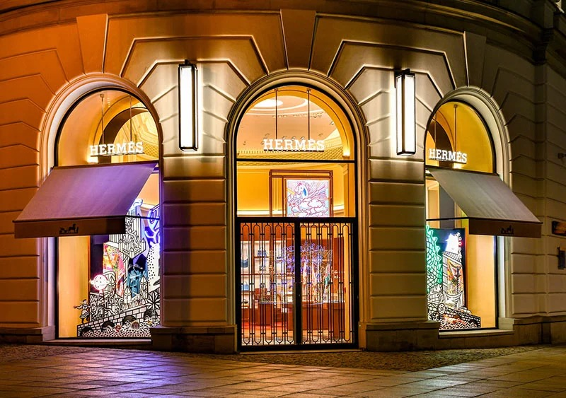

Luxury Isn’t Selling Status Anymore. It’s Selling Control.
The economy has split in two: the rich keep spending while everyone else is priced out. What the luxury boom really reveals about status, security, and the things we buy to feel safe.

In spring 2026, the global economy split in two: middle-income households in the US and Europe downshifted to budget shopping as inflation bit, while Hermès posted double-digit growth and gold jewellery sales in China soared. Two economies, side by side, reveal conflicting stories about spending. The real question is not whether luxury is thriving, but who is sustaining it, and what that reveals about the pursuit of status, security, and control in uncertain times.
The old theory, and why it still holds
This pattern is not new, even if its scale is. In 1899, the economist Thorstein Veblen coined the term “conspicuous consumption” to describe purchases made not for their function but for the message they send about wealth and social standing. A handbag is rarely just a handbag. It is a signal, and in an era when that signal can be broadcast instantly to thousands of followers, the incentive to buy one has only grown stronger. Social media did not invent status spending, but it gave it a permanent stage.
The K-shaped consumer
What social media cannot explain on its own is why luxury keeps growing while ordinary consumers pull back. Analysts have started calling this dynamic a “K-shaped economy.” One branch of consumers, generally those holding appreciating assets like stocks and property, keeps spending freely, while the other branch, dependent on wages eroded by inflation, pulls back hard. Morgan Stanley’s 2026 research describes this divergence directly, noting that high-net-worth consumers continue benefiting from asset gains even as inflation squeezes everyone else, and that luxury performance increasingly mirrors this split rather than the broader economy.
That alone complicates the easy narrative that luxury is simply thriving. Here is the more uncomfortable detail. Roughly 80 per cent of luxury’s market growth between 2023 and 2025 came not from selling more goods, but from raising prices on the same volume of goods. Luxury houses haven’t mainly been winning new customers. They have been charging existing ones more, often without matching increases in craftsmanship or creativity. The result shows up clearly in brand-value rankings, where some storied names lost double-digit percentages of brand equity in a single year, while disciplined players like Hermès grew by leaning on scarcity and genuine craftsmanship rather than price hikes alone.
Buying security, not just status
The psychological story is just as revealing. In China, consumers have increasingly treated gold jewellery less as adornment and more as a savings vehicle, a hedge against a wobbling economy that also happens to look beautiful on a wrist. Watches show a similar pattern, increasingly purchased as appreciating assets rather than accessories. This is the quiet rebranding of luxury, from “I can afford to waste money” to “I am protecting my money intelligently.” Consultants now describe a split between “comfort-first” buyers seeking reliability and a “nihilistic splurge” cohort who spend precisely because the future feels uncertain, treating indulgence as a form of emotional insurance rather than excess. Veblen’s theory explains why people want to be seen spending. It does not fully explain why, in 2026, so much of that spending is being justified as a financial safety net.
This is the quiet rebranding of luxury: from “I can afford to waste money” to “I am protecting my money intelligently.”
The vanishing middle, and the quiet rebellion against logos
The consequence of price-driven growth is a disappearing aspirational customer, the upper-middle-class shopper who once saved all year for one meaningful purchase. Priced out of the flagship handbags and ready-to-wear collections, this consumer has not disappeared from the market entirely. Luxury houses have long understood this and built lower rungs into the ladder through fragrances, cosmetics, and small leather goods, letting a much wider audience buy into the brand’s prestige without the full financial commitment. Meanwhile, new entrants such as Laopu Gold in China are filling the space that legacy houses left behind, offering culturally resonant craftsmanship at a more accessible price.
At the very top of the market, something almost opposite is happening. The rise of “quiet luxury,” understated pieces with no visible logos, exceptional materials, and timeless design, suggests that the wealthiest buyers are growing tired of shouting. Status has not vanished from their motivations, but the method of signalling it has shifted from broadcasting a brand name to demonstrating taste that only the informed will recognise.
The verdict
So, products or status? The honest answer, in 2026, is neither in isolation. Luxury brands are selling a sense of control in an uncontrollable economy, dressed up in leather, gold, and heritage branding, or deliberately stripped of branding altogether for those who already feel secure enough not to need it. That is a powerful product to sell, but a fragile one. A brand that wins loyalty through price increases and scarcity marketing alone is borrowing against a customer’s patience rather than earning their trust.
The houses likely to matter a decade from now are the ones rebuilding genuine craftsmanship and creative risk-taking, not the ones simply raising price tags and hoping status anxiety does the rest of the work. Ultimately, the future of luxury will depend on how willing these brands are to adapt to shifting definitions of value and security, balancing exclusivity with authenticity and real creative renewal. The ones that manage this thoughtfully will not just survive an uncertain era. They will be the ones who decide what luxury means next.
◆ ◆ ◆